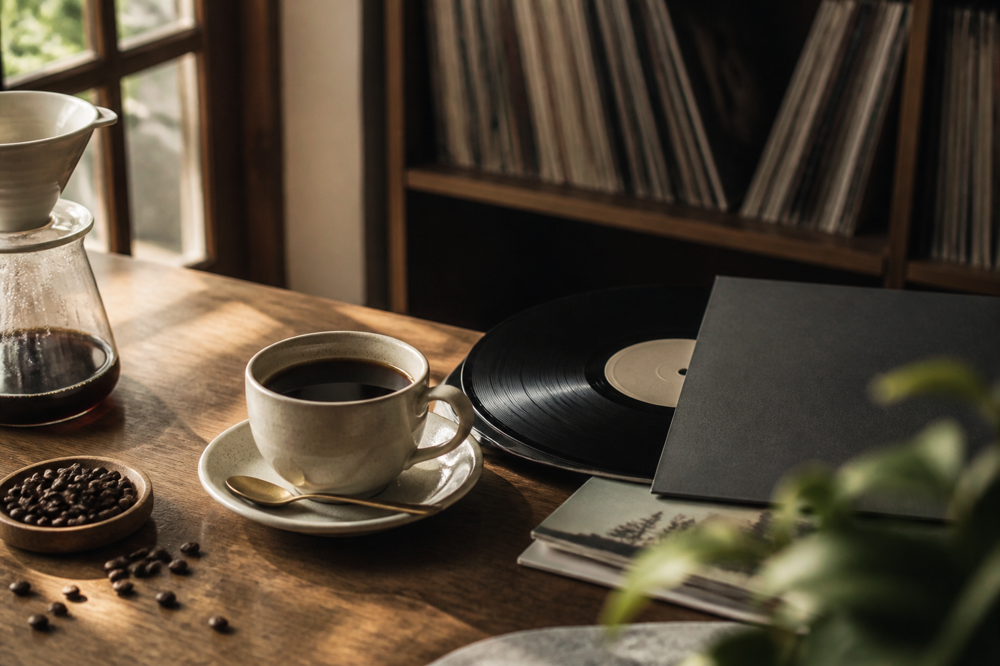
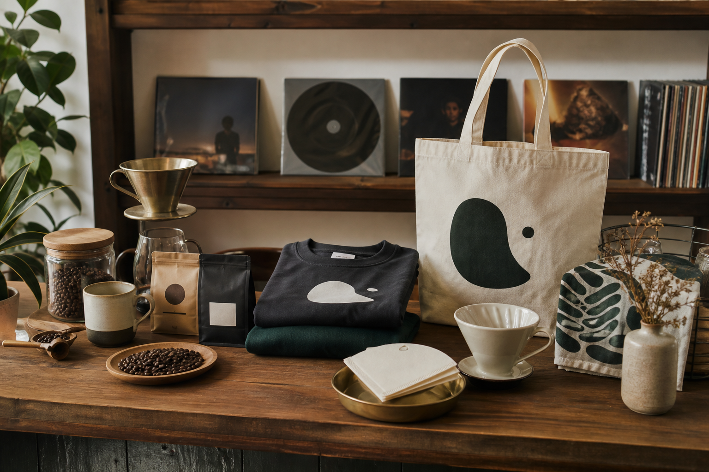
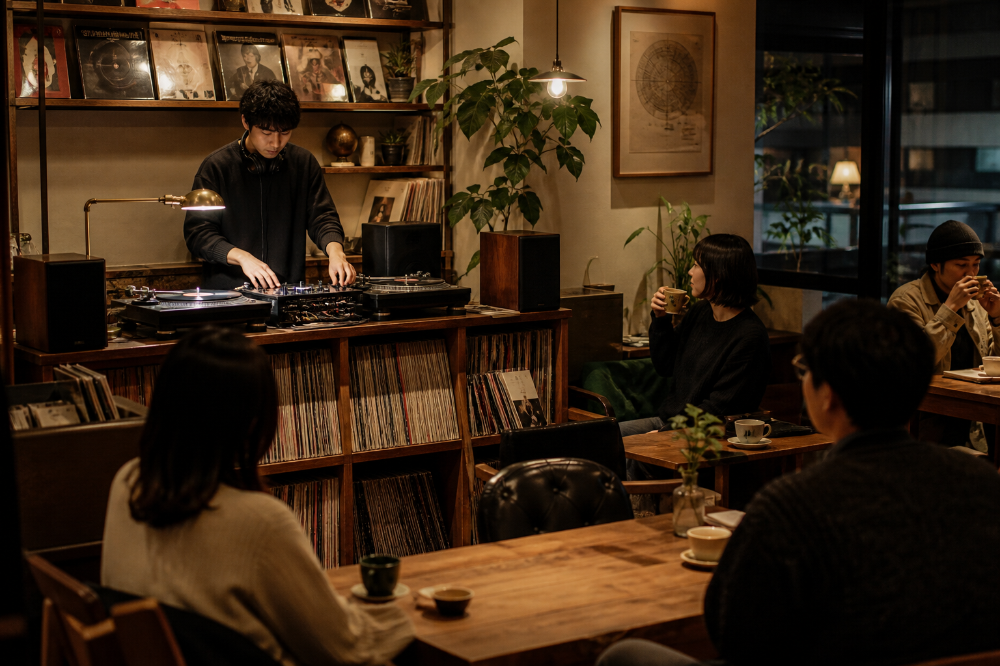

ただ過ぎる時間
コーヒーを飲んで、スマホを見て、気づけば時間だけが過ぎている。
コーヒーと レコードが、 日常の温度を変える。
昼は静かに音楽を楽しむカフェ。週末はDJイベントも開ける、カルチャーのある場所です。
CONCEPT
TAKE WORKS CAFEは、レコードの音とコーヒーの香りがある小さなカルチャーカフェです。
ひとりで本を読む時間も、誰かと話す時間も、流れている音で少しだけ深くなる。そんな日常の余白をつくります。
WHY THIS PLACE
コーヒーを飲んで、スマホを見て、気づけば時間だけが過ぎている。
レコードの音が流れて、その日の気分や会話まで少し記憶に残る。
DJの選曲が、カフェの空気を整える。音量もテンポも、時間帯に合わせて変えていく。

MUSIC DIRECTION
TAKE WORKS CAFEの音楽は、ただ好きな曲を流すだけではありません。朝のコーヒー、昼の読書、夕方の会話、週末のイベント。その時間に合うレコードを選び、店の温度をつくります。
静かに立ち上がるジャズ、ソウル、アンビエント。
会話と読書の邪魔をしない、温度のあるグルーヴ。
DJイベントやゲスト選曲で、少しだけ街の熱を持ち込む。
EXPERIENCE
日常に戻れる、深煎りと季節の一杯。
棚から選ぶ楽しさと、店内に流れるアナログの質感。
音があるのに話しやすい、ちょうどいい余白。
週末には、店の奥が小さなDJブースに変わる。
MENU & SHOP
コーヒー、焼き菓子、軽食に加えて、家でも楽しめる豆や器具、店の空気を持ち帰れるオリジナルグッズを用意しています。
豆やグッズは店頭とイベント時に販売。オンラインストアは準備中です。


DJ CAFE DAY
週末は、店内のDJブースからレコードを中心に選曲します。大きな音で踊るイベントではなく、コーヒーを飲みながら音楽に出会える時間。
ゲストDJ、レコード持ち寄り、展示やポップアップも企画できます。
次のDJ CAFE DAYを見るSELECTED BY TAKE WORKS
盛り上げるためだけではなく、会話の邪魔をしない音、ひとりの時間に寄り添う音、人が集まる日の熱をつくる音を選びます。
TAKE WORKS CAFEのDJは、曲を目立たせるよりも、その場の空気が自然に深くなることを大切にしています。
EVENT & PRIVATE USE
DJイベント、展示、ポップアップ、トークイベント、貸切利用の相談を受け付けています。音楽が主役の日も、会話を支える日も、その場に合う音を一緒に考えます。
イベント・貸切を相談するレコード中心の小さな音楽イベント。
アパレル、ZINE、コーヒー豆、雑貨の販売企画。
誕生日、交流会、少人数の貸切。
写真、アート、カルチャー展示。
INFORMATION
※以下はポートフォリオ用の架空店舗情報です。
Weekday 11:00 - 20:00 / Weekend 11:00 - 22:00
カウンター6席、テーブル12席。ひとりでも入りやすい小さな店内。
駅から徒歩7分の路面店を想定した架空ロケーション。
現金、クレジットカード、主要キャッシュレス決済に対応想定。
コーヒー豆、器具、オリジナルグッズは店頭・イベント時に販売。
FAQ
はい。ひとりでコーヒーやレコードを楽しめる席を用意しています。
通常営業では、会話や読書の邪魔にならない音量にしています。
イベント内容によって異なります。各イベント情報で案内します。
はい。オリジナルグッズ、豆、器具だけの購入も可能です。
はい。内容、日程、人数を確認したうえでご提案します。
CONTACT
DJイベント、貸切、展示、ポップアップなど、TAKE WORKS CAFEでの企画相談を受け付けています。内容がまだ固まっていなくても、まずは気軽にご相談ください。
※このLPはポートフォリオ用の架空制作サンプルです。店舗、商品、イベント内容は実在しません。